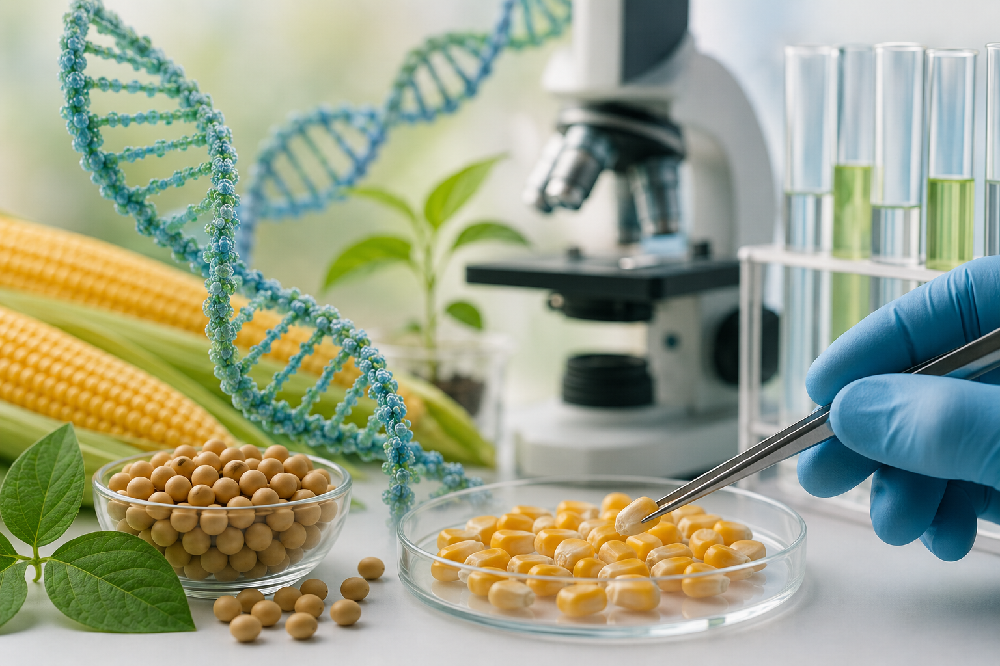

🌽 GMOs & Your Health: What Does the Science Actually Say?

GMOs have become one of those topics where the internet can turn a complicated scientific question into a simple choice: "natural and safe" versus "modified and dangerous."
You'll see claims about cancer, infertility, "chronic toxins," organ damage and even effects supposedly passed down through generations.
But when you strip away the viral posts and look at the evidence, the picture is considerably less dramatic.
So, are GMOs a hidden health hazard?
Let's separate the facts from the fear.
THE BIG QUESTION: DO GMOs CAUSE CANCER?
Short answer: There is no convincing evidence that approved GM foods cause cancer.
This question has been investigated extensively. The U.S. National Academies examined available evidence and found that cancer patterns did not support the idea that genetically engineered food consumption had substantially increased cancer incidence.
The World Health Organization also states that GM foods currently on the international market have passed safety assessments and that no effects on human health have been demonstrated from their consumption in countries where they are approved.
That doesn't mean scientists should stop asking questions. It means the evidence currently available does not support the viral claim that eating approved GM food causes cancer.
BUT WHAT ABOUT THAT STUDY SHOWING TUMOURS IN RATS?
You may have seen this one.
In 2012, French researcher Gilles-Éric Séralini and colleagues published a study claiming that rats fed GM maize and/or exposed to glyphosate developed more tumours.
The paper attracted enormous media attention.
It also attracted enormous scientific criticism.
Among the concerns were the study design, statistical interpretation, sample size and the particular rat strain used, which has a high background rate of spontaneous tumours.
The paper was subsequently retracted by the journal, with the publisher citing concerns about the strength of the evidence.
One controversial study can raise an important question.
It cannot, by itself, establish that an entire category of food causes cancer.
MYTH: "GMOs ARE FULL OF TOXINS."
This one sounds scientific because it contains the word "toxins."
But genetically modifying a crop does not automatically make it toxic.
In fact, one of the reasons GM foods undergo specific safety assessments is to look for potential toxicity, allergenicity, nutritional changes and unintended effects before approval. WHO describes these as core parts of GM food safety assessment.
And here is an important distinction:
A GM crop can be designed to produce a particular biological effect.
For example, some Bt crops produce proteins that are toxic to specific insect pests.
That does NOT mean the protein is automatically toxic to humans.
Risk depends on the substance, dose, biological mechanism and the organism being exposed.
"It's a toxin" is therefore not enough information to tell us whether something is dangerous to eat.
MYTH: "GMOs CAUSE INFERTILITY ACROSS GENERATIONS."
This claim has circulated for years, including stories about hamsters allegedly becoming infertile by the third generation after eating GM soy.
The problem?
Extraordinary claims require extraordinary evidence.
Stories circulating online are not substitutes for properly designed, independently scrutinised research.
More importantly, GM food safety assessments do not simply ask, "Does the food look normal?"
They examine nutritional characteristics, toxicity, allergenicity and potential unintended effects.
MYTH: "EUROPE BANNED GMOs BECAUSE THEY ARE DANGEROUS."
Not quite.
The European Union has historically taken a more precautionary and highly regulated approach to GMOs than countries such as the United States.
But "Europe banned GMOs" is misleading.
The EU has authorised GM products for uses including food and feed, following scientific risk assessments.
The European Food Safety Authority, EFSA, conducts case-by-case assessments covering areas such as toxicity, allergenicity, nutrition and environmental risks. For example, EFSA has concluded for multiple authorised GM maize varieties that they are as safe as their conventional counterparts for the intended uses.
And as of 2026, the EU is actually updating its framework for certain new genomic techniques, while maintaining safety requirements.
So the European position is much more complicated than "GMOs are banned because they're dangerous."
HERE'S THE PART WE SHOULD NOT IGNORE
Saying "GMOs are not shown to be harmful" does NOT mean every question surrounding biotechnology has disappeared.
There are legitimate questions around:
- Herbicide use and resistance
- Pest resistance
- Biodiversity
- Gene flow between crops and related plants
- Effects on non-target organisms
- Farming practices
- Corporate control of seeds
- Patents and farmer access
- Labelling and consumer choice
Notice something?
Some of these are agricultural, environmental, economic or political questions rather than evidence that eating an approved GM crop causes cancer.
That distinction matters.
A technology can be considered safe to eat while people still debate whether the way it is deployed is environmentally, economically or socially desirable.
AND THE SCIENCE IS STILL MOVING
A recent review published in 2025 analysed animal data from studies involving GM maize, rice and soybean.
It identified some statistically significant physiological changes, including changes in glucose concentration and relative liver or kidney weight in certain experimental groups.
But the authors reported that the glucose changes remained within reference ranges and that no pathological changes in the organs were reported. They concluded that the findings did not indicate pathological risks, while also calling for continued research into metabolic and biochemical effects.
This is exactly why science shouldn't be reduced to:
"GMOs are 100% harmless."
or
"GMOs are poison."
Neither statement accurately represents how food safety science works.
THE REAL SCIENTIFIC POSITION
GMOs are not one single food.
A genetically modified tomato, maize variety and soybean can have completely different genetic modifications and therefore need to be evaluated individually.
WHO explicitly notes that GM foods should be assessed case-by-case rather than assuming that every GMO is automatically safe or automatically dangerous.
For GM foods currently approved and on the market, major scientific and regulatory bodies have not found evidence that they pose greater health risks than comparable conventional foods.
But continued assessment matters.
New technology should continue to be tested.
New products should continue to be evaluated.
And new evidence should be taken seriously, whether it supports or challenges what we currently believe.
THAT'S THE POINT OF SCIENCE.
- Not "believe scientists."
- Not "believe activists."
- Not "believe TikTok."
Look at the evidence.
Ask who conducted the study.
Check whether it was independently reviewed.
Look at the size and design of the study.
Separate correlation from causation.
And most importantly, ask:
"Does the evidence actually support the claim being made?"
🌱 Hivemaa Take
The GMO debate doesn't need more shouting.
It needs better agricultural literacy.
Biotechnology is becoming an increasingly important part of modern agriculture, from genetic modification to gene editing and other breeding technologies.
Whether you support or oppose a particular technology, you should understand what it actually does before deciding what you think about it.
Because in agriculture, fear is not a substitute for evidence.
And neither is hype.
Hivemaa is here to help make the science easier to understand.
#Hivemaa #Agriculture #GMOs #Biotechnology #AgricTech #FoodSafety #AgriculturalScience